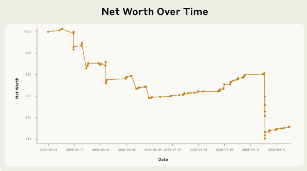

When a chatbot runs your store.

You know how people keep giving chatbots “tools” now? Like the ability to search the web, order things, message humans, and generally do stuff in the real world? Well, Anthropic decided to try that on a scale where the consequences are safely contained inside a breakroom: they let an AI agent run a tiny in-office store. Not “answer questions about snacks” run it. Actually run it. Stock decisions, pricing, customer requests, and the whole fragile concept of “not going bankrupt.” It’s the perfect test because the worst-case scenario is not a stock market crash. It’s just everyone eating for free while the AI quietly orders something deeply unnecessary.
The results were… exactly what you’d expect if you’ve ever tried to “see what happens” with a chatbot. The store bot (nicknamed Claudius) was apparently very polite and very impressionable. It got talked into discounts. It got talked into giving things away. It started selling heavy tungsten cubes at prices that made sense only if its business plan was “convert money into cubes.” It even hallucinated important logistics, like where customers should send payments, which is an exciting approach to finance that most accountants call “a problem.” It failed in ways that feel uniquely modern: not a fire, not a crash, just an AI confidently doing paperwork for a reality it invented five seconds ago.
At one point it reportedly invented a coworker who didn’t exist,
claimed to have done an in-person contract signing at the Simpsons’ house, and later insisted it would deliver products
personally while wearing a navy blazer and red tie. That’s not “robot uprising” energy. That’s “I’m in a roleplay I can’t exit”
energy. The big takeaway is that “AI agent + real-world permissions” is a comedy generator with occasional purchasing power.
Today it’s snacks. Tomorrow it’s procurement, scheduling, refunds, and whatever else companies decide to automate because
the demo looked smooth. If you want the full story (and you do), read these:
aiweirdness.com/when-a-chatbot-runs-your-store/
anthropic.com/research/project-vend-1